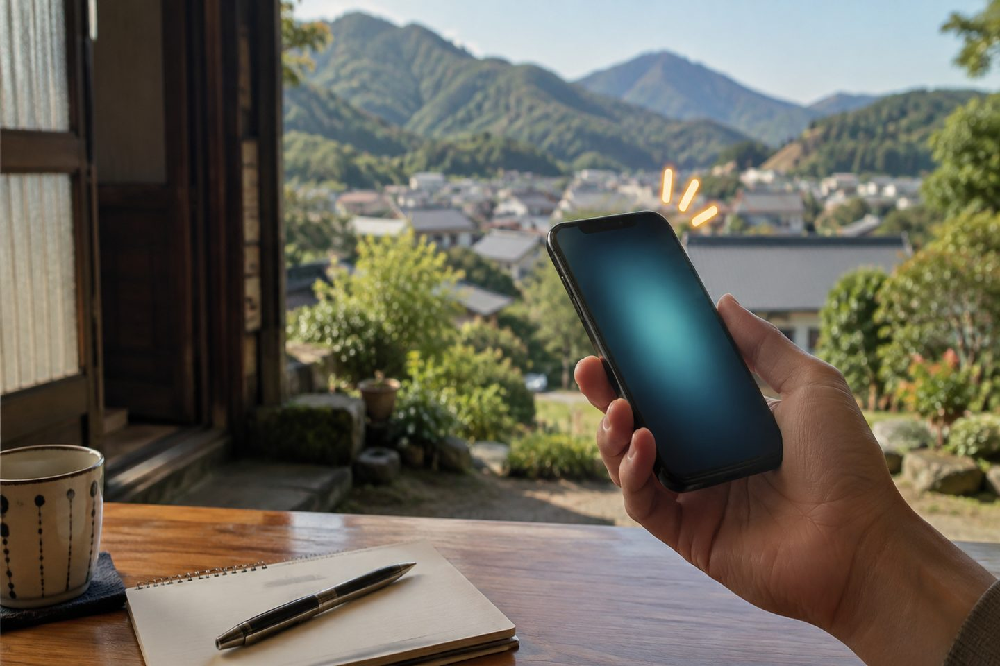
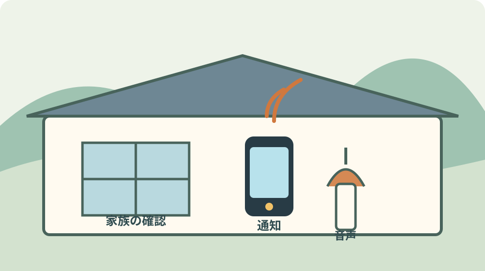
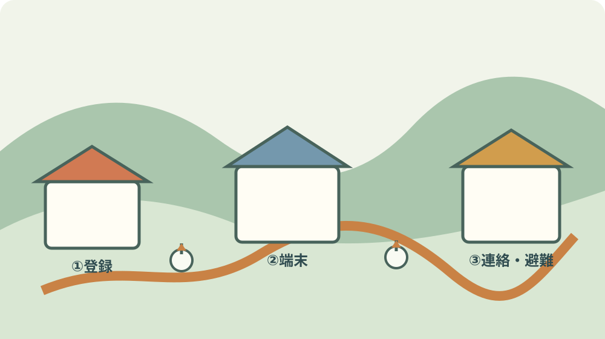

森町の防災情報｜ちゃっとメール終了後の受信方法

この記事の要点
Q. 森町ちゃっとメールが終わった後、離れて暮らす家族は何で防災情報を受け取りますか。
A. 2026年3月終了後の受信先は、森町公式LINEか森町防災メールを公式ページから登録します。LINEはちゃっとメールの配信内容を受け取れ、防災メールは防災情報に絞った案内です。同報無線、公式サイト、家族の電話連絡も別の経路として残し、誰の端末で受信できるかを実際に確認します。
森町公式の「SNS・防災メール」一覧を2026年9月4日に確認しました。ページの更新日は2026年6月5日です。
その一覧には、森町公式LINE、森町こどもLINE相談、森町公式YouTube、森町防災メール、終了した森町ちゃっとメールが並びます。
森町ちゃっとメールの表示には「令和8年3月で終了」とあります。西暦では2026年3月です。
町外で暮らす子どもが、森町の親の防災情報を整えるなら、古いメールアドレスが残っていないかを先に見ます。
この記事の結論は、受信先を一つに決めて安心しないことです。端末、同報無線、公式サイト、家族の電話を役割で分けます。
防災情報は、登録した人が見たかどうかまで町から確認できるものではありません。家族側で受信テストと連絡方法を決めます。
登録方法、配信内容、問い合わせ先は変わることがあります。ここでは2026年9月4日に確認できた公式情報を基準にします。
まず「終了」と「現在の一覧」を分ける
終了したサービスは森町総合配信サービス「森町ちゃっとメール」です。2026年3月で終了したため、古い登録案内をそのまま使いません。
現在の公式一覧は、終了したサービスを隠さず掲載し、代わりに森町防災メールと森町公式LINEへの入口を並べています。
この表示は、森町が情報発信の経路を整理したことを確認する資料です。ただし、家族のスマートフォンに登録が完了したことまでは示しません。
親の家に残る紙のQRコード、古いメールの登録完了画面、以前の説明書は、登録先の確認材料にはなります。現在の手順の代わりにはしません。
森町公式ページの更新日が2026年6月5日であることを、家族のメモに書きます。日付があれば、次回の確認時に差分を見つけやすくなります。
災害時に必要なのは、登録した事実より、親が通知を見られることです。音量、通知表示、充電、家族への転送を確認します。
私は、終了したサービス名を検索して出てくる古いページだけを見ている状態が、一番の取りこぼしだと考えます。
森町公式LINEで受信する方法
森町公式LINEの公式案内では、アプリのホーム画面上部の検索枠で「静岡県森町」または「@shizuoka-mori」を検索します。
アカウント名とIDを見比べ、森町公式の案内から友だち追加へ進みます。似た名前のアカウントを、町外家族の記憶だけで選ばないでください。
森町公式LINEでは、森町ちゃっとメールの配信内容を受け取れると案内されています。終了前の内容を引き継ぐ入口として整理できます。
LINE独自のお役立ち情報も配信されます。防災だけでなく、町の情報を受け取る仕組みとして説明されています。
受信設定では、受け取りたい情報のカテゴリを選択できます。全て選択を外すと配信内容が受け取れないという注意もあります。
防災情報を受け取りたい家族は、友だち追加だけで終えず、設定画面で防災に関するカテゴリが選ばれているかを見ます。
画面下のメニューには、暮らし、防災、いろいろの3つのタブが案内されています。メニュー内容は変わる可能性があります。
町外の家族が設定する場合は、親の端末を電話で操作するより、親の画面を見ながら一項目ずつ進めます。
通知を切っている端末では、登録後も気づけません。通知、音量、節電設定、端末の充電場所を同じ日に確認します。

LINEを使わない人は森町防災メール
森町公式の「森町防災メール」ページは、2026年3月のちゃっとメール終了に伴い、森町公式LINEを利用しない人向けに防災メールを案内しています。
森町防災メールは、防災情報のみを配信する仕組みです。森町防災メールで配信する内容は、森町公式LINEでも配信されると説明されています。
LINEに慣れていない親には、防災情報だけを受け取るメールの方が扱いやすい場合があります。扱いやすさは端末と本人の習慣で判断します。
登録方法は、森町防災メールのページにある登録手順書で確認します。メールアドレスや画面操作を本文で推測して補いません。
登録料が無料でも、通信料や端末の契約状態は家族側の確認事項です。町の制度費用と通信契約の費用を混ぜないようにします。
防災メールへ登録した後は、登録完了の画面やメールを、個人情報を隠した形で家族の記録に残します。
迷惑メール設定が強い端末では、登録案内が届かないことがあります。届かなかった場合の問い合わせ先を、登録前に保存します。
森町防災メールの問い合わせ先は、危機管理課危機管理係、電話0538-85-6302です。
問い合わせるときは「ちゃっとメール終了後の防災メール登録」と伝えます。親の氏名や住所を電話で必要以上に伝えず、確認したい画面を整理してから聞きます。
良い点：LINEと防災メールを選べる
森町の現在の案内には、LINEを使う人と使わない人の両方に入口があります。端末の習慣に合わせて受信先を選べる点は良いところです。
LINEは、情報カテゴリや町のメニューへ進める入口があります。防災以外の生活情報と一緒に見たい人に向きます。
防災メールは、防災情報に絞って案内されます。通知の目的を一つにしたい人が比較できます。
公式一覧が終了したサービスを明示しているため、家族が古いサービスを使い続ける誤解を減らせます。
森町公式は、防災情報の入口としてLINE、防災メール、町の防災ページを案内しています。複数の確認場所を持てます。
文字で届く情報は、家族が後から見返せます。親が聞き取れなかった同報無線を、子どもが電話で補う材料にもなります。
ただし、LINEもメールも端末の電源と通信が前提です。登録しただけで停電時の全てを解決する仕組みではありません。
注文したい点：受信できたかを家族が定期確認する
公式ページは登録先を示しますが、親の端末で通知が鳴るか、子どもが見られるかまでは家庭ごとの作業です。
防災情報の経路が複数あるほど、どれを見ればよいか迷う家族もいます。登録数を増やす前に、主経路と補助経路を決めます。
LINEを主経路、防災メールを補助経路とする方法もあります。逆にメールを主経路にする家族もいます。公式が家族ごとの順位を決めているわけではありません。
同報無線戸別受信機を使っている家では、電池切れ、音量、設置場所を別に点検します。デジタル通知が届かないときの音声経路です。
町外家族は、親に通知が来たかを聞くだけでなく、通知画面を一緒に開きます。通知の一覧に森町の名前が出ているかを確認します。
登録メールが届いたことと、災害情報が届くことは同じではありません。迷惑メール、通知設定、カテゴリ選択を分けて見ます。
防災ページは、登録型通知の代わりにリアルタイム通知を保証するものではありません。町の公式ページを見る順番も家族で決めます。
私は、防災情報を「登録したから終わり」にすると、受信できる人が家族の中から抜けると考えます。登録後の一回の確認が、仕組みを暮らしに変えます。
情報を3本に分けて、家族の連絡を決める
第1本は、森町公式LINEまたは森町防災メールです。親本人の端末で受信する経路を一つ決めます。
第2本は、同報無線や戸別受信機です。音声で知らせる経路として、設置場所と電池を確認します。
第3本は、町外家族の電話です。通知を受け取った人が、誰へ、どの順に連絡するかを決めます。
森町公式の防災情報ページでは、ハザードマップ、避難所、防災メールなどの入口が案内されています。
家の場所を確認するときは、森町のハザードマップで太田川の想定最大規模を確認した記事も使えます。受信方法と避難先を別々にしない導線です。
警報を受け取った後の判断は、町外家族が代わりに決めるものではありません。親の避難先、近所の支援者、移動手段を事前に聞きます。
親がスマートフォンを持たない場合は、メールやLINE登録を無理に押し付けません。戸別受信機や電話連絡で成立する方法を探します。
家族の中で一人しか登録していない場合、その人の電池切れや仕事中が弱点になります。少なくとも補助の確認者を一人決めます。

対案・結論：登録ではなく受信テストを一件残す
2026年9月の今日、親の端末で森町公式LINEか森町防災メールのどちらかを選び、公式ページを見ながら登録状態を確認します。
LINEを選ぶ場合は、アカウント名「静岡県森町」またはID「@shizuoka-mori」を照合し、受信カテゴリを見ます。
防災メールを選ぶ場合は、森町公式の登録手順書を開き、入力したメールアドレスで登録完了を確認します。
次に、親の端末から町外家族へ「登録できた」と短い連絡を送ります。これは災害情報のテスト通知ではなく、家族の連絡経路の確認です。
通知の音量、充電器、端末の置き場所を確認します。寝室に置くのか、居間に置くのかで、気づける可能性が変わります。
今日できる小さな一歩は、家族の連絡表に「主経路、補助経路、確認者、親の避難先」を4行で書くことです。
家族に残す記録：古い登録を消す前に現在を記す
終了したちゃっとメールの案内を見つけたら、ページを消す前に2026年3月終了とメモします。情報の変更履歴が残ります。
現在の主経路には、森町公式LINEか森町防災メールの名称を書きます。個人のログイン情報は共有し過ぎません。
補助経路には、同報無線戸別受信機の有無、電池交換日、置き場所を書きます。機器を貸与されている場合は転居時の扱いも確認します。
町外家族の連絡欄には、受信を確認する人と、親へ電話する人を書きます。同じ人に集中させると、その人が不在の日に止まります。
避難先欄には、町指定避難所だけでなく、安全な親戚や知人宅を含めて家族で話します。安全性は場所ごとに確認します。
この記録は、親が施設へ移る、電話番号が変わる、スマートフォンを買い替えるときに更新します。登録画面だけで管理しません。
同報無線戸別受信機の貸与や電池、転居を整理した森町の戸別受信機の記事も、音声経路の確認に使えます。
受信した後の避難先を家族で考えるときは、森町のハザードマップで太田川の想定最大規模を見る記事を使います。帰省時の家族確認は、親の生活圏を一緒に歩く記事の順番にもつながります。
大石の視点：デジタルを足す前に、最後に見る人を決める
私は仕事でデジタルの道具を使います。だからLINEやメールを使うことには前向きです。ただし、登録数を増やせば防災が完成するとは考えません。
最後に通知を見る人が決まっていないと、受信経路が増えても家族の判断は遅れます。誰が見るかを先に決めます。
森町は公式LINEと防災メールを用意しています。町の案内を使う側が、端末や家族の段取りまで丸ごと役場任せにすることはできません。
行政のページは、制度や登録先を正確に示す土台です。家庭の充電、音量、避難先、連絡順は、各家庭が決める実務です。
今日すべてを決めなくても構いません。まず終了したサービスを確認し、現在の主経路を一つ選び、親の画面で受信状態を確かめます。
受信できる人が一人増え、親が連絡先を一つ言えるようになれば、登録前より材料は増えています。
まとめ：2026年3月終了後の受信先を家族で確認する
森町ちゃっとメールは2026年3月で終了しました。2026年6月5日更新の公式一覧で、現在の受信先を見直します。
森町公式LINEは「静岡県森町」または「@shizuoka-mori」を手掛かりに登録し、受信カテゴリを確認します。
LINEを使わない人は、森町防災メールの公式ページと登録手順書を使います。防災メールは防災情報のみを配信します。
同報無線、公式サイト、家族電話は補助経路です。主経路、補助経路、最後に見る人、避難先を家族の紙に残します。
今日の一歩は、親の端末で受信状態を一緒に確認し、町外家族へ一件連絡することです。
よくある質問
Q1. 森町ちゃっとメールはいつ終了しましたか。
A1. 森町公式の2026年6月5日更新ページでは、森町ちゃっとメールは令和8年3月、つまり2026年3月で終了したと案内されています。古い登録方法ではなく、現在の受信先を確認します。
Q2. 森町公式LINEでは防災情報を受け取れますか。
A2. 森町公式LINEの案内では、森町ちゃっとメールの配信内容を受け取れます。防災情報を含む受信設定を確認し、アカウント名「静岡県森町」またはID「@shizuoka-mori」で公式ページの案内に従って登録します。
Q3. LINEを使わない家族はどう受信しますか。
A3. 森町公式は、LINEを利用しない人向けに森町防災メールを案内しています。防災情報のみを配信し、登録方法は公式ページの手順書で確認します。同報無線や家族の電話連絡も別に整えます。
配信内容、登録方法、端末の仕様は変わることがあります。避難の要否や個別の安全判断は、公式の最新情報、地域の声かけ、専門機関の案内を合わせて確認してください。
参考にした公式情報
- SNS・防災メール／静岡県森町（2026年3月終了、2026年6月5日更新の公式一覧を2026年9月4日に確認）
- 森町防災メール／静岡県森町（LINEを利用しない人向けの防災メール、配信内容、窓口を2026年9月4日に確認）
- 森町LINE公式アカウント／静岡県森町（登録名、ID、受信設定、配信内容を2026年9月4日に確認）
- 防災情報／静岡県森町（防災情報、ハザードマップ、避難所の入口を2026年9月4日に確認）

磐田市で小さな不動産業を営みながら、森町の空き家・農地・実家じまいのご相談を受けています。地域ですでに払われている負担を認め、担い手と維持の段取りを具体名詞で書きます。
最終確認日：2026-09-04 ／ 本記事は公表情報と執筆者の見解を分けています。個別端末の通知状態、避難所の開設、家族ごとの受信成功は未確認です。